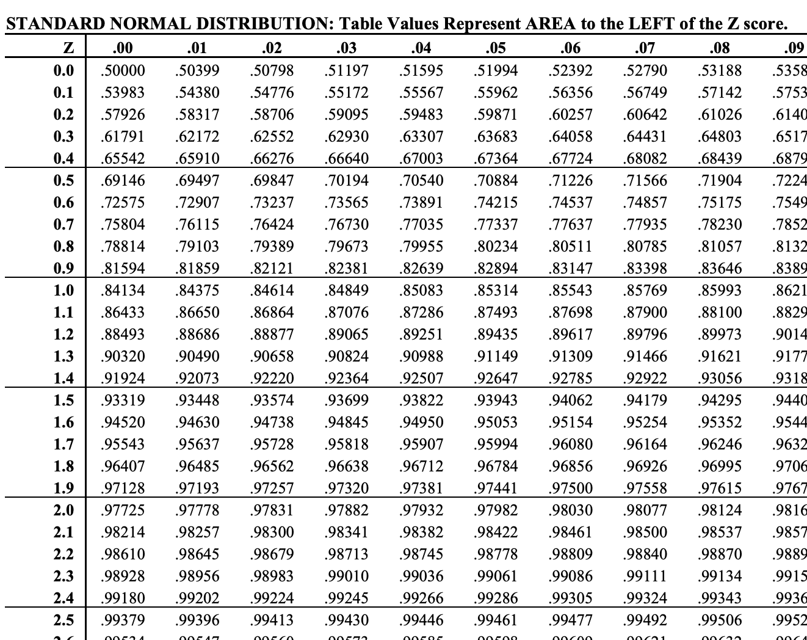
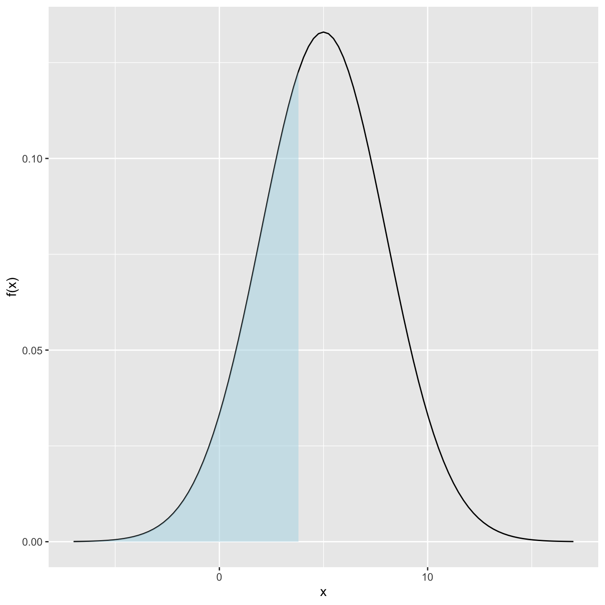
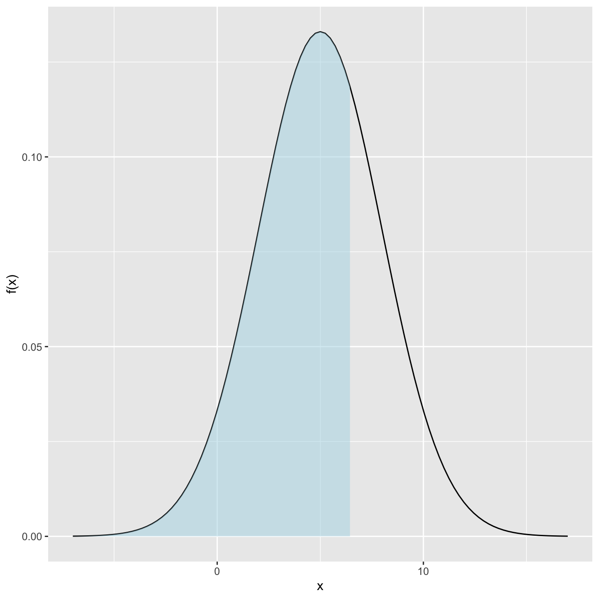
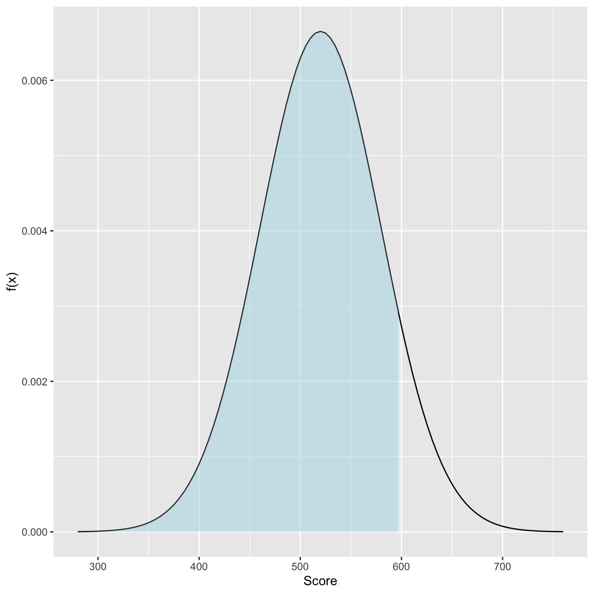
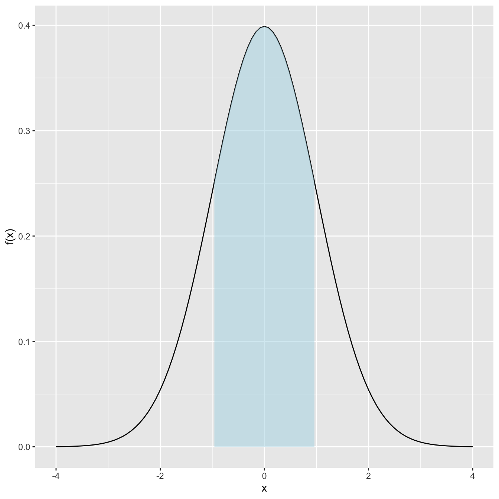
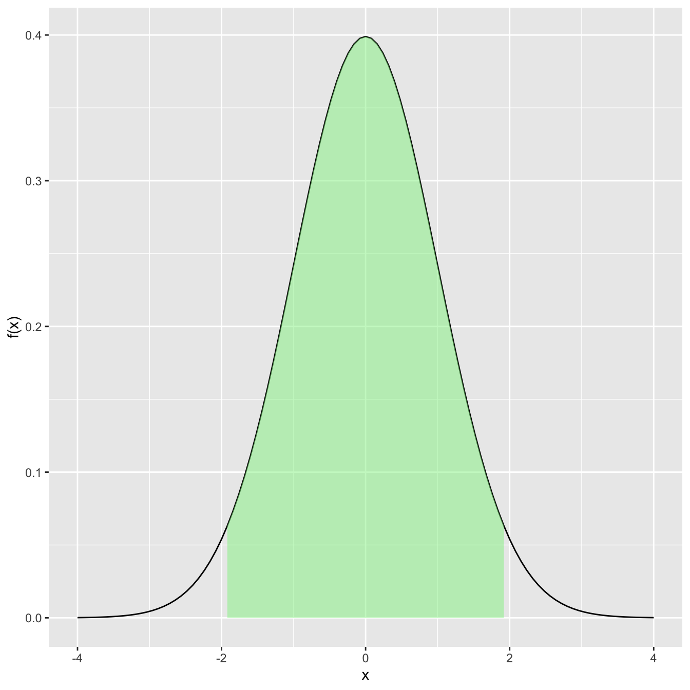
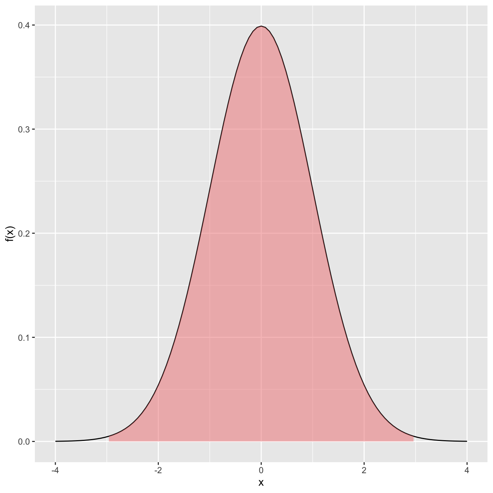
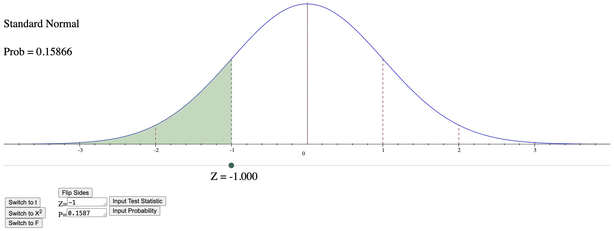

pnorm(1.8,0,1)[1] 0.9640697pnorm(1.89,0,1)[1] 0.970621Computing probabilities and quantiles from this important distribution
The normal (also known as ‘Gaussian’) is \(X\sim N(\mu_X,\sigma_X^2)\):
Its pdf:
\[ f_X(x)=\frac1{(2\pi\sigma_X^2)^{1/2}}e^{-\frac{(x-\mu_X)^2}{2\sigma_X^2}} \]
(Just like the binomial, you don’t need to know this formula for this class)
Computing probabilities with the normal requires computers
In times of yore, this meant using tables:

Now, we can just use a computer:
pnorm(1.8,0,1)[1] 0.9640697pnorm(1.89,0,1)[1] 0.970621We will always write \(X\sim N(\mu_X,\sigma_X^2)\) for the normal
R syntax will be specified with \(\mu_X\) and \(\sigma_X = \sqrt{\sigma_X^2}\) instead
Example
If \(X \sim N(5,9)\), then the probability \(X\) is less than 4 is:
[1] 0.3694413Continuing with \(X \sim N(5,9)\):
(that is, normal with expected value 5 and variance 9)
Recall:
For a value \(x = 4\), \(P(X \leq 4)\):
pnorm(4,5,3)[1] 0.3694413
Now, let’s ask the opposite question!
For a fixed probability \(p\), what is the value \(x\) so that \(P(X \leq x) = p\)?
This value is called a quantile
Example:
What \(x\) makes \(P(X\leq x) = .7\)?
qnorm(.7,5,3)[1] 6.573202
Concept Check: What would each of the following codes produce?
qnorm( pnorm(3,5,3), 5, 3). . .
[1] 3. . .
pnorm( qnorm(.2,5,3), 5, 3). . .
[1] 0.2Suppose \(X \sim N(-3.2, 100)\)
that is, normal with expected value -3.2 and variance 100
Probability: What is the probability \(X\) equals 0?
. . .
This is always zero!
. . .
Probability: What is the probability \(X\) is less than 0?
. . .
pnorm(0,-3.2,sqrt(100))[1] 0.6255158. . .
Values: at what value \(x\) does \(P(X\leq x) = .05\)?
. . .
qnorm(.05,-3.2,sqrt(100))[1] -19.64854Example
The scores on the SAT math section are \(X \sim N(520,3600)\)
(that is, normal with expected value 520 and variance 3600)
What is the probability someone scores less than 600?
\(P(X \leq 600) = \text{what probability?}\)
x = 600
mu = 520
sigmaSq = 3600
pnorm(x, mu, sqrt(sigmaSq))[1] 0.9087888
Example
The scores on the SAT math section are \(X \sim N(520,3600)\)
The stats dept. admits students scoring above \(96^{th}\) percentile
What is the cutoff score (\(x\)) for recruitment by the stats dept.?
\(P(X \leq x) = 0.96\)
prob = .96
mu = 520
sigmaSq = 3600
qnorm(prob, mu, sqrt(sigmaSq))[1] 625.0412
Suppose again \(X \sim N(\mu_X, \sigma_X^2)\)
If we multiply/add constants \(a,b\) to \(X\) to form a new rv \(Y\):
\[ Y = aX + b \]
then \(Y \sim N(a\mu_X + b, a^2 \sigma_X^2)\)
(This should remind you of our \(E[X]\) and \(Var[X]\) results)
Example:
If \(X \sim N(150,100)\) then
\[ Y = 3X + 30 \sim N(480, 900) \]

We are measuring a machined part using a ruler on a .01” scale
If several people measure, they will get some random amount of measurement error:
\[ X \sim N(.875, .00005) \]
What is the probability that that a measurement will be within \(\pm\).01 centimeters?
(An inch is 2.54 cm)
\(Y = 2.54X\), therefore \(Y \sim N(2.54*.875, 2.54^2*.00005) = N(2.2225, 0.00032)\)
\[\begin{align} P(2.2225 - .01 \leq Y \leq 2.2225 + .01) & = \\ = P(2.2125 \leq Y \leq 2.2325) & \\ = F(2.2325) - F(2.2125) \end{align}\]
mu = 2.54*.875
sigmaSq = 2.54^2*.00005
pnorm(mu + .01, mu, sqrt(sigmaSq)) -
pnorm(mu - .01, mu, sqrt(sigmaSq))[1] 0.4223202When \(\mu=0\) and \(\sigma=1\), we call it the standard normal
\[ f_Z(z)=\frac1{\sqrt{2\pi}}e^{-z^2/2},\,\,-\infty<x<\infty. \]
(Once again, you don’t need to know this formula for this class)
The standard normal will be notated as: \(Z \sim N(0,1)\)
Going from a general normal to a standard normal is known as standardization
\[ X \sim N(\mu_X, \sigma_X^2) \longrightarrow Z = \frac{X - \mu_X}{\sigma_X} \sim N(0,1) \]
The opposite (actually, the inverse) is true
\[ Z \sim N(0, 1) \longrightarrow X = Z \cdot \sigma_X + \mu_X \sim N(\mu_X,\sigma_X^2) \]
(this is using the results in Transforming Normals)
The z-score can be computed:
\[ \text{z-score} = \frac{x - \mu_X}{\sigma_X} \]
(For a value \(x\) from a distribution with mean \(\mu_X\) and variance \(\sigma_X^2\))
Question: Which of the two values from two different distributions is more unusual?
Answer: Whichever z-score has larger magnitude
(that is, largest |z-score|)
Example: We want to compare Olympic records in men’s and women’s sprinting. Which is more unusual?
| Category | Men’s | Women’s |
|---|---|---|
| average (\(\mu\)) | \(\mu_M = 9.85\) | \(\mu_W = 10.83\) |
| variance (\(\sigma^2\)) | \(\sigma_M^2 = .0057\) | \(\sigma_W^2 = .0049\) |
| record | 9.63 | 10.61 |
Let’s compute the two z-scores:
zScoreM = (9.63 - 9.85)/sqrt(.0057)
zScoreM[1] -2.913971zScoreW = (10.61 - 10.83)/sqrt(.0049)
zScoreW[1] -3.142857The women’s result is more unusual
The z-score for men is \(\text{z-score}_M\) = -2.914 while for women it is \(\text{z-score}_W\) = -3.143
Another use of z-scores: what value \(x\) would be equally as unusual?
Answer: Choose the \(x\) so that the z-scores are equal
Example: What time for a men’s sprinter would be equivalent to the female record?
| Category | Men’s | Women’s |
|---|---|---|
| average (\(\mu\)) | \(\mu_M = 9.85\) | \(\mu_W = 10.83\) |
| variance (\(\sigma^2\)) | \(\sigma_M^2 = .0057\) | \(\sigma_W^2 = .0049\) |
| record | 9.63 | 10.61 |
We previously found the female z-score:
\[ \text{z-score}_W = \frac{10.61 - \mu_W}{\sigma_W} = \frac{10.61 - 10.83}{\sqrt{.0049}} \] = -3.143
To find the equivalent time, we need to unstandardize \[ \text{z-score}_W*\sigma_M + \mu_M = x \]
Here, use
x = zScoreW * sqrt(.0057) + 9.85
x[1] 9.612719The male record would need to be 9.613 seconds to be as unusual as the female record.
Values from normal distributions contain predictable amounts of probability
This is the empirical rule:

\(P( |Z| \leq 1) = 0.68\),

\(P( |Z| \leq 2) = 0.95\),

\(P( |Z| \leq 3) = 0.997\)
In looking at a sample of 29 pulsar stars, they had periodicity:

What is the approximate standard deviation using the empirical rule?
. . .
x = c(5.3,4.3,6.1,5.7,7,5.9,3.4,4.7,7.4,7.2,5.7,5,5.5,4.9,5,5.2,6.5,4.9,4.9,4.6,6.9,5.2,6.6,6.6,5.7,4.6,6.6,6.1,3.8)
This has sample standard deviation = 1.0181965
On exams, there will be a link to an applet: Probability applet
Note: This applet is totally optional and unnecessary if you use R

Returning to SAT example:
x = 600
mu = 520
sigmaSq = 3600
pnorm(x, mu, sqrt(sigmaSq))[1] 0.9087888qnorm(.96, mu, sqrt(sigmaSq))[1] 625.0412To use the applet
1.751*sqrt(sigmaSq) + mu[1] 625.06(here, 1.751 came from the applet by using the probability .96 from SAT example)
The normal plays a central role in probability and statistics
We will return to it later during sampling distributions…